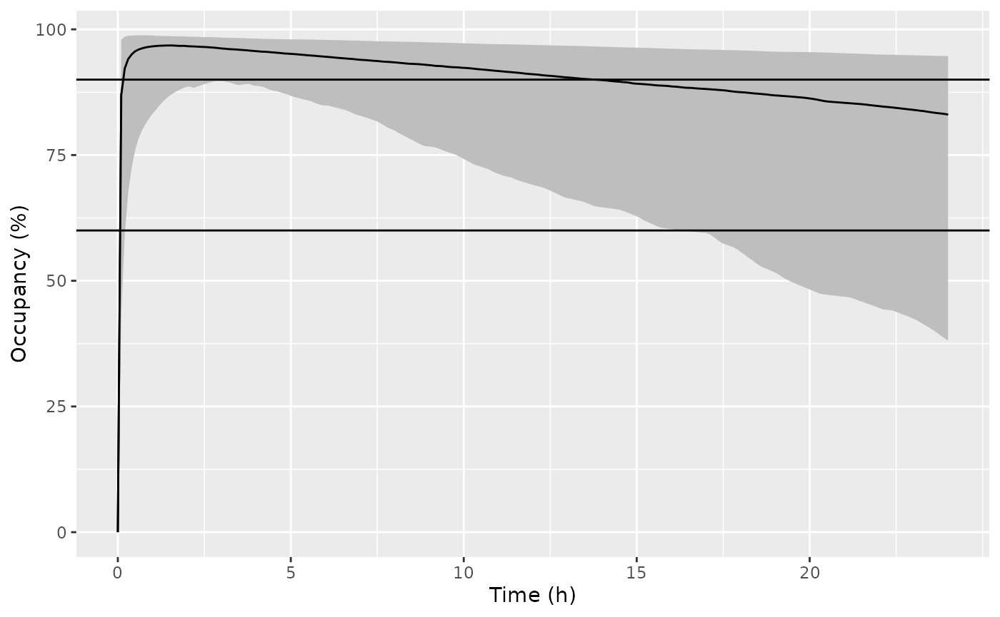

library(nlmixr2lib)
library(dplyr)
#>
#> Attaching package: 'dplyr'
#> The following objects are masked from 'package:stats':
#>
#> filter, lag
#> The following objects are masked from 'package:base':
#>
#> intersect, setdiff, setequal, union
library(ggplot2)Nalmefene replication
Replicate figures 5 in the publication with a single 20 mg dose in
the fed state. Assumed the mean age, lean body mass, a tablet, and the
LC-MS/MS assay was used. The paper indicates that simulations used a
uniform age distribution of 18-80 years and LBM of
~N(56,72). Since no limits were provided for LBM in the
simulation settings, these simulation settings were not used.
dSimDose <-
data.frame(
ID = 1,
AMT = 20, # mg/kg
TIME = 0,
EVID = 1,
CMT = "depot"
)
dSimObs <-
data.frame(
ID = 1,
AMT = 0,
WT = 5,
TIME = seq(0, 24, by = 0.1),
EVID = 0,
CMT = "central"
)
dSimPrep <-
dplyr::bind_rows(dSimDose, dSimObs) |>
dplyr::mutate(
LBM = 56.28,
AGE = 28,
RIA_ASSAY = 0,
FED = 1,
TABLET = 1
)
Kyhl2016Nalmefene <- readModelDb("Kyhl_2016_nalmefene")
# Set BSV to zero for simulation to get a reproducible result
dSimNalmefene <- rxode2::rxSolve(Kyhl2016Nalmefene, events = dSimPrep, nStud = 500)
dSimNalmefene$Analyte <- "Nalmefene"Plot plasma PK
Replicate figure 5 from the paper. Assuming that the “confidence bounds” are actually 95% prediction intervals.
dSimNalmefenePlot <-
dSimNalmefene |>
group_by(time) |>
summarize(
Q025_pk = quantile(sim, probs = 0.025),
Q50_pk = quantile(sim, probs = 0.5),
Q975_pk = quantile(sim, probs = 0.975),
Q025_occ = quantile(e_mu_opioid, probs = 0.025),
Q50_occ = quantile(e_mu_opioid, probs = 0.5),
Q975_occ = quantile(e_mu_opioid, probs = 0.975)
)
ggplot(dSimNalmefenePlot, aes(x = time, y = Q50_pk, ymin = Q025_pk, ymax = Q975_pk)) +
geom_line() +
labs(
x = "Time (h)",
y = "Estimated plasma concentration (ng mL^-1)"
) +
geom_ribbon(fill = "gray") +
geom_line() +
scale_x_continuous(breaks = seq(0, 24, by = 5))
ggplot(dSimNalmefenePlot, aes(x = time, y = Q50_occ, ymin = Q025_occ, ymax = Q975_occ)) +
geom_line() +
labs(
x = "Time (h)",
y = "Occupancy (%)"
) +
geom_ribbon(fill = "gray") +
geom_line() +
geom_hline(yintercept = c(60, 90)) +
scale_x_continuous(breaks = seq(0, 24, by = 5))